Accuracy by image type
Typed, scanned text reads best. Photographs score above 80%, so the OCR stage is not the weak link for camera images.
North South University · ECE · Dhaka
A camera, a sonar sensor and a Raspberry Pi identify the vehicle, check its e-wallet and lift the barrier. No booth attendant, no RFID tag to lose.
The simulator reproduces the logic described in the report. It does not run the real OCR model, and the vehicles, balances and fee are made-up demo data.
The recorded demo shows the hardware rig detecting a vehicle, reading the plate and operating the gate.
Video not loading? Open it on Google Drive.
Cash payment and tag reading hold every vehicle at the booth. The report ties this to wasted time, fuel and revenue.
| Method | How it works | Limitations |
|---|---|---|
| Manual booths | An operator takes cash from each driver. | Slow, labour-intensive, error-prone, and creates queues. Human handling also leaks revenue. |
| RFID tags | A tag on the vehicle is read by a sensor at the gate. | Tags can be duplicated, lost or damaged, and systems differ between regions. |
| Basic video tolling | Cameras photograph plates, read with simple image processing. | Accuracy drops with lighting, camera angle, and stains or damage on the plate. |
| This project | Camera and sonar feed an ML-based OCR pipeline on a Raspberry Pi, matched against a server database. | Designed for real-time use, varied lighting and angles, and integration with smart-city systems. |
The camera module photographs the vehicle, the Raspberry Pi sends the image to a server for OCR, and the server answers with a yes or no. The Pi then moves the barrier.
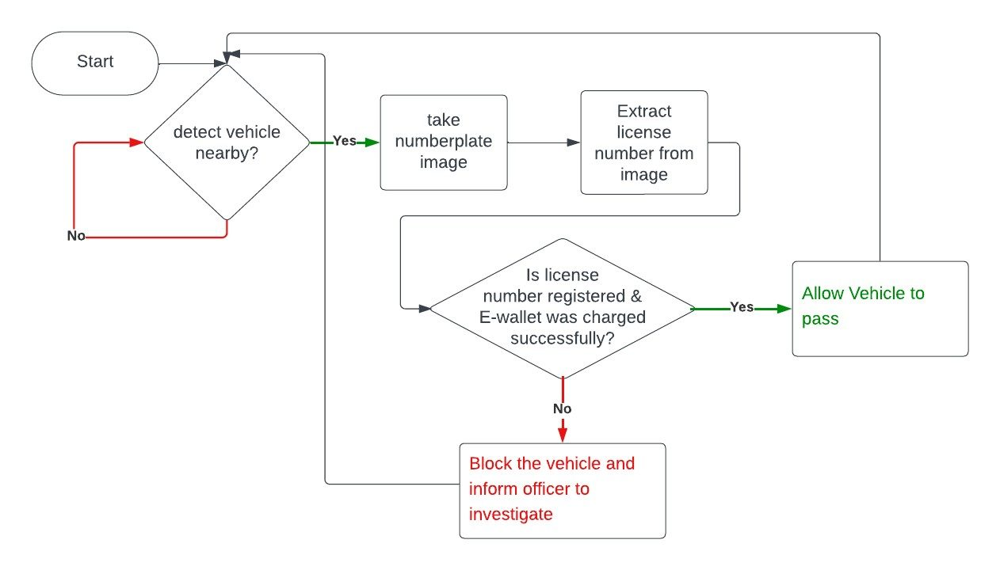
The recognized number is checked against a database of registered vehicles.
An LCD shows messages to the driver and LEDs act as indicator lights.
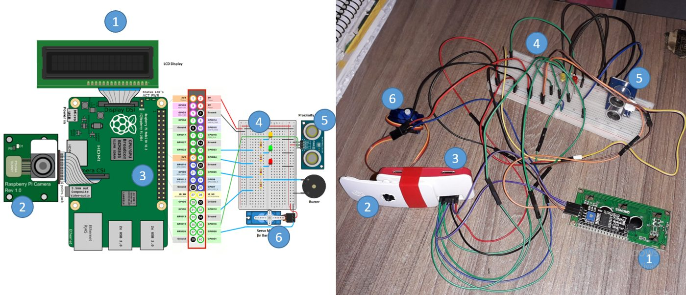
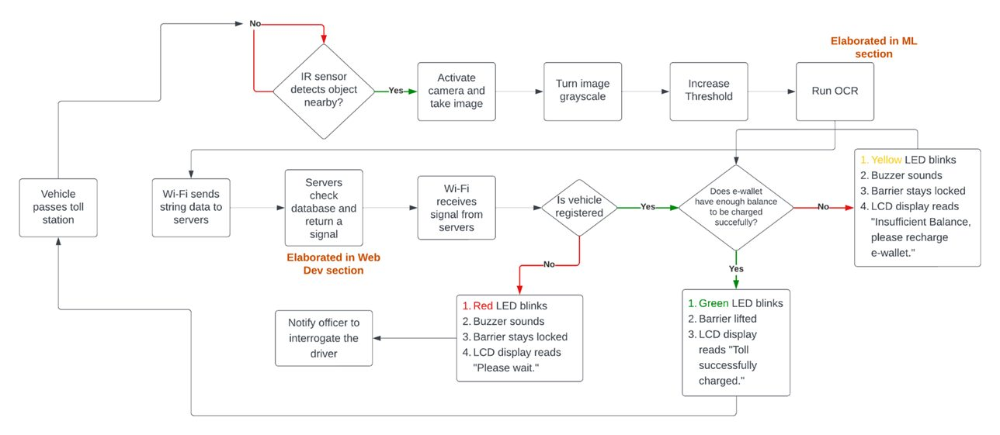
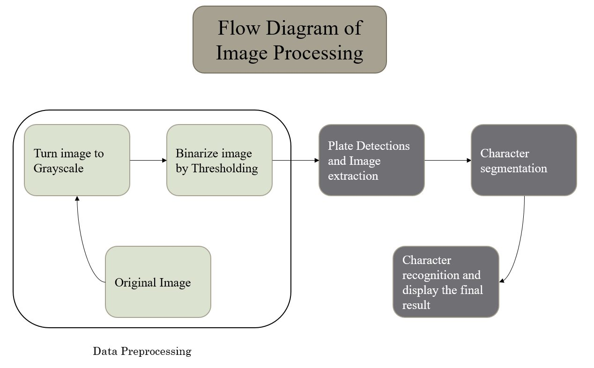
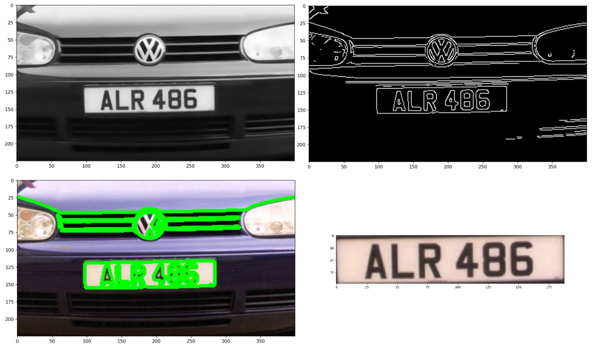
Drivers register on a website with personal details and vehicle information (plate number and type). After verification they can log in.
When a plate is recognized at the gate, the matching account is charged automatically and the driver gets an email or SMS confirmation.
Administrators get a dashboard for traffic flow, transaction volume and camera status, with alerts for unrecognized plates and failed transactions.
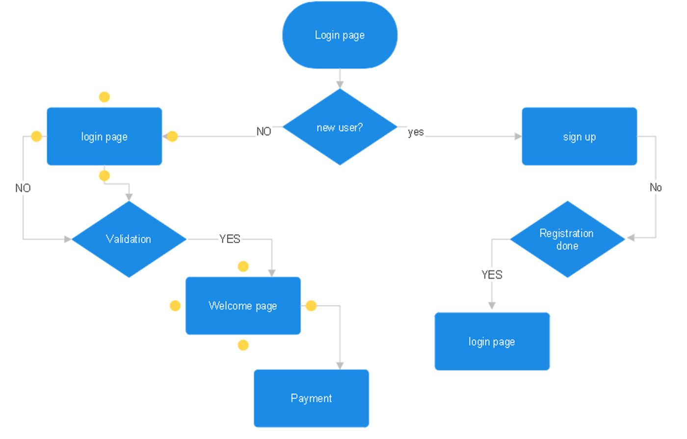
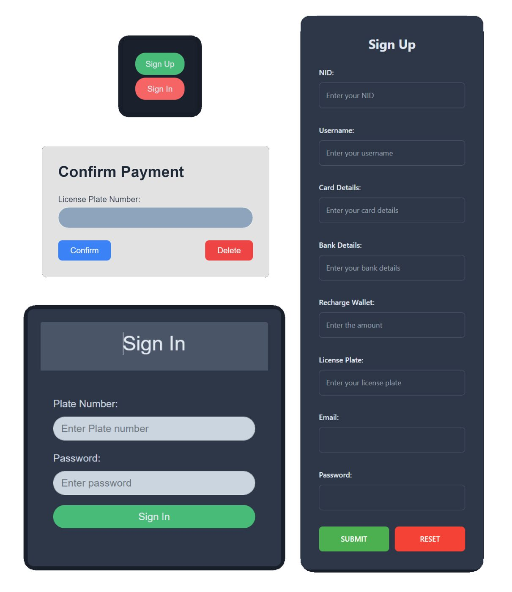
The OCR model was evaluated on accuracy by image type, error categories, comparison with other models, and execution time on the Raspberry Pi.
Typed, scanned text reads best. Photographs score above 80%, so the OCR stage is not the weak link for camera images.
The report describes this model as landing in the 60–70% range, and its comparison chart shows it behind both CRNN and Keras-OCR. Better image quality and resolution improve it.
Counts of mismatched or poor outputs by cause.
15.046 s average
Measured across different plate string lengths. Strings longer than about 8–10 characters ran slightly faster, while shorter strings took longer.
That is far slower than a moving vehicle allows, which is why the prototype triggers capture only when the vehicle is nearly stopped.
Bar values are read from the report's charts and are approximate. The original charts are below.
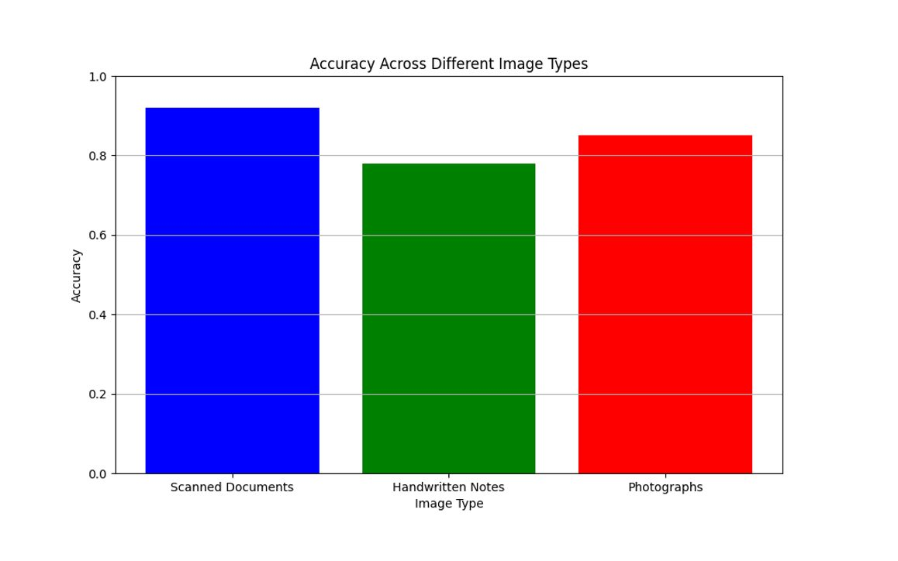
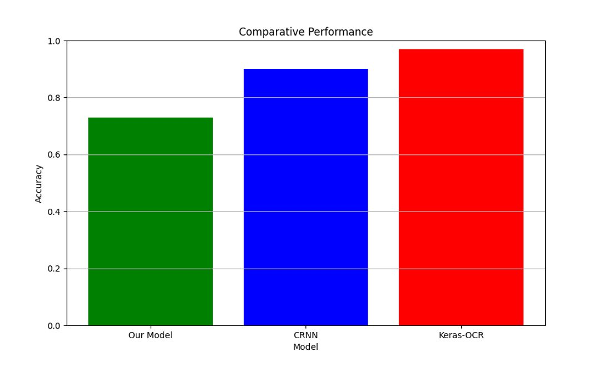
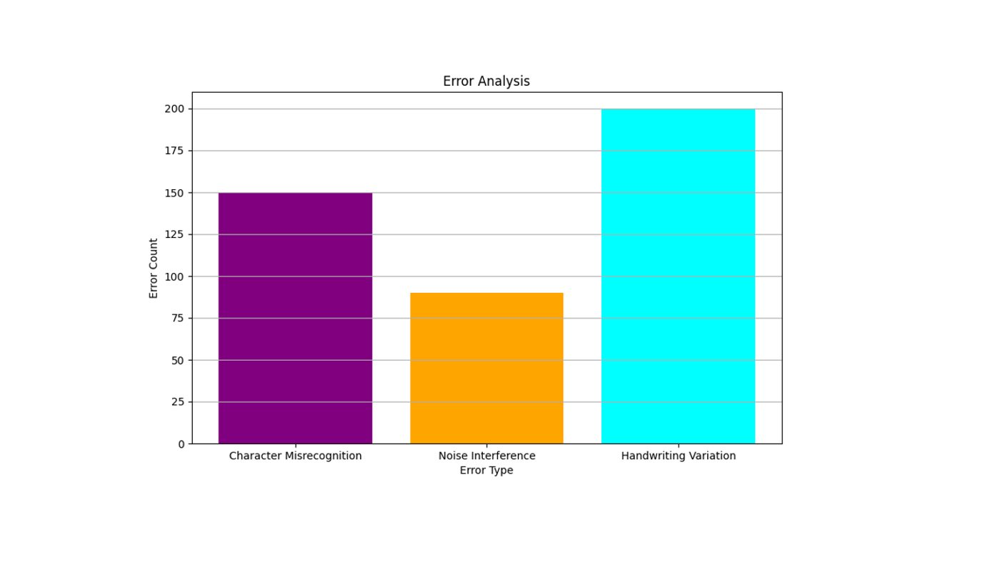
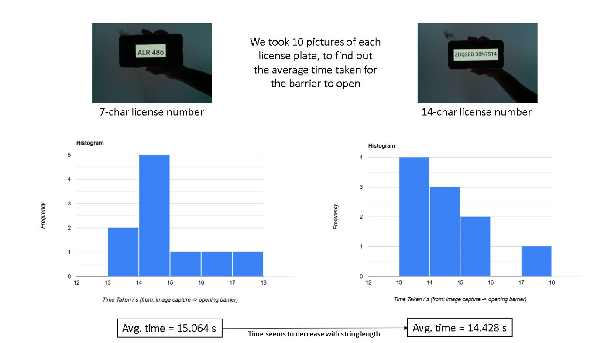
The project delivers a toll collection prototype that uses a Raspberry Pi and IoT connectivity to link a camera at the gate to a central, real-time database. Python processes the captured images to extract plate numbers, which removes the manual steps of traditional tolling and adds real-time security checks for roads.
Planned extensions from the report.
CNN and other deep learning models for vehicle detection and classification, tuned for high traffic volumes.
Automated billing with e-wallets, cryptocurrencies and other digital payment platforms.
Sensors at toll points, plus lower toll rates for electric and hybrid vehicles.
Traffic pattern prediction for dynamic pricing, and sensors that predict infrastructure maintenance.
View toll charges, check payment history and manage accounts from a phone.
Solar panels with battery storage to run toll points sustainably.
Department of Electrical and Computer Engineering, North South University, Bashundhara, Dhaka 1229, Bangladesh.